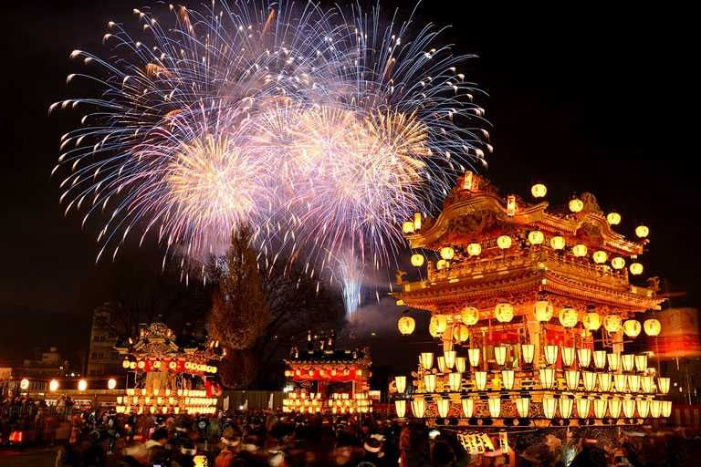
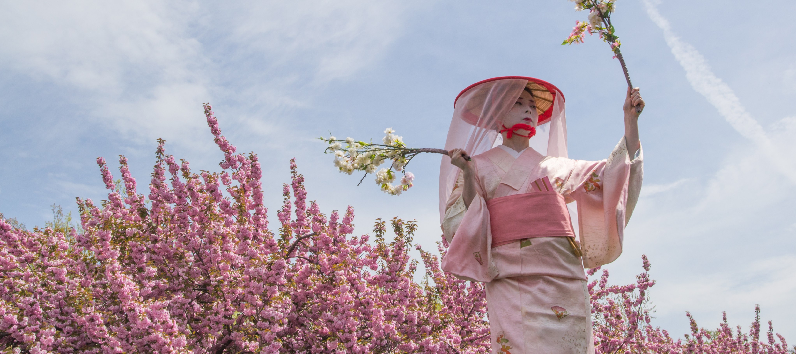
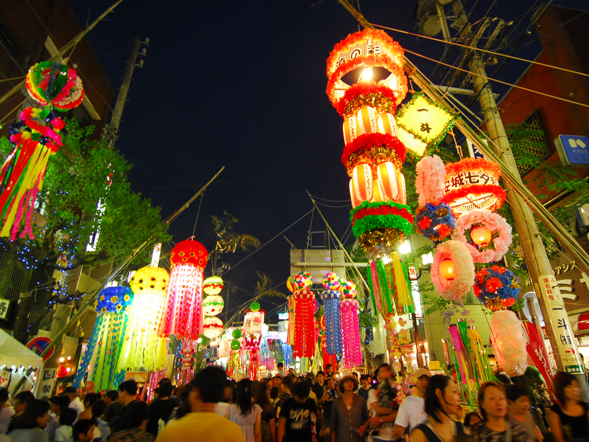

Japan, an island nation in East Asia, is renowned for its unique blend of ancient traditions and
cutting-edge modernity. Located in the northwest Pacific Ocean, Japan is made up of four main
islands—Honshu, Hokkaido, Kyushu, and Shikoku—as well as numerous smaller ones. With a
population of approximately 125 million people, Japan boasts vibrant cities like Tokyo,
Yokohama, and Osaka, alongside tranquil natural landscapes such as Mount Fuji and the serene
cherry blossoms of Kyoto. As a constitutional monarchy with a rich cultural heritage, Japan
seamlessly integrates its historic customs with contemporary innovations, from traditional tea
ceremonies and festivals to groundbreaking advancements in technology and pop culture. Renowned
for its exquisite cuisine and historical landmarks, Japan offers a diverse array of experiences
for visitors, while its resilient economy and sophisticated infrastructure underscore its status
as a global leader.(wikipedia)
Hanabi Festival

The "Hanabi Festival" is a spectacular fireworks event that lights up the night sky over
Tokyo Bay, bringing together locals and tourists to witness a breathtaking display of
pyrotechnic artistry. This festival is a celebration of light, color, and sound, featuring an
array of fireworks that illuminate the skyline with stunning patterns and vibrant hues.
As the sun sets, the festival begins with a series of smaller firework displays, each more
intricate than the last. The highlight of the evening is a grand finale that fills the sky with
a symphony of lights, choreographed to music that echoes across the bay. The reflection of the
fireworks on the water adds an extra layer of beauty to the spectacle, creating a mesmerizing
experience for all who attend.
In addition to the fireworks, the festival offers a variety of traditional Japanese food stalls,
live performances, and cultural exhibitions that showcase the rich heritage of Japan. Visitors
can enjoy delicacies such as takoyaki, yakitori, and taiyaki while soaking in the festive
atmosphere.
Whether you're a fan of fireworks or simply looking to experience the magic of Japanese
festivals, the "Festival Kembang Api" is an event you won't want to miss. Join us for an
unforgettable evening of entertainment, culture, and community under the starry sky of Tokyo
Bay.
Sakura Matsuri

The Sakura Matsuri, or Cherry Blossom Festival, is one of Japan's most celebrated events, held
annually to honor the blooming of cherry blossoms (sakura). During this festival, Ueno Park
transforms into a sea of delicate pink and white blossoms, attracting visitors from all over the
world.
The event features a range of activities including traditional tea ceremonies, live performances
of Japanese music and dance, and art exhibitions inspired by the beauty of sakura. Visitors can
also participate in hanami (flower viewing) picnics under the cherry trees, where they can enjoy
seasonal treats such as sakura-flavored sweets and matcha tea.
The festival also includes craft markets showcasing handmade goods and local souvenirs, as well
as workshops where guests can learn traditional Japanese arts and crafts. As evening falls,
lanterns illuminate the park, creating a magical atmosphere perfect for evening strolls and
photography.
Tanabata Matsuri

Tanabata Matsuri, or the Star Festival, is a vibrant celebration held in Sendai City to honor the
legend of Orihime and Hikoboshi, two stars separated by the Milky Way. This festival is renowned
for its colorful decorations and lively atmosphere, making it a highlight of summer in
Japan.
During Tanabata, the streets of Sendai are adorned with elaborate decorations made from colorful
paper streamers, lanterns, and bamboo. The highlight of the festival is the Tanabata parade,
where participants dress in traditional yukata and carry intricate floats through the
city.
Visitors can enjoy a variety of cultural activities including traditional music performances,
dance exhibitions, and food stalls offering delicious summer treats like yakisoba and kakigori
(shaved ice). There are also workshops where guests can create their own tanzaku (wish cards) to
hang on bamboo branches, a tradition associated with the festival.
As night falls, the festival culminates with a dazzling display of fireworks, lighting up the
sky and providing a stunning backdrop to the celebrations. The combination of vibrant
decorations, cultural events, and festive atmosphere makes Tanabata Matsuri a memorable
experience for all.